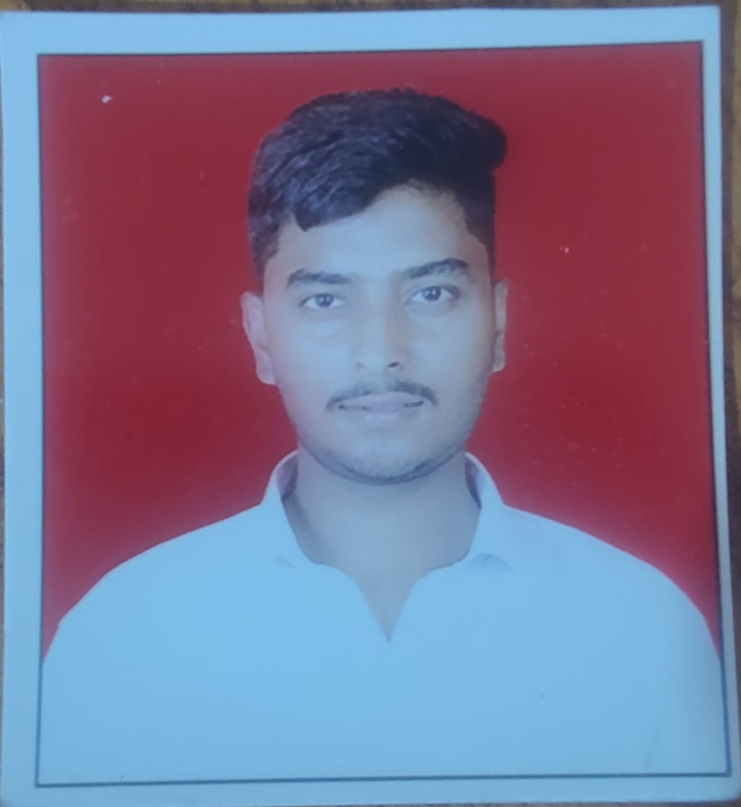

Aditya Ashok Kasar
Mechanical Engineer transitioning to Software Engineering with a passion for leveraging analytical problem-solving skills and technical acumen to develop innovative software solutions.
Experienced in designing and optimizing mechanical systems, I bring a strong foundation in mathematics, programming, and project management to the realm of software development.
Education Detials
| Course |
Institute |
year |
Result |
| B.Tech MechanicalEngineering |
Jawaharlal Nehru Engineering College |
2023 |
8.56 Cgpa |
| HSC |
Nutan Mahavidyalaya Selu |
2019 |
58.15% |
| SSC |
Nutan Vidyalaya Selu |
2017 |
82.20% |
Key Skills
- Proficient in programming languages including C , C++,Java ,Html &CSS ,MySql and Python
- Strong understanding of data structures, algorithms, and software design principles
- Experience with version control systems (e.g., Git) and agile development methodologies
- Skilled in CAD software (e.g., SolidWorks, AutoCAD) for mechanical design and modeling
- Knowledgeable in finite element analysis (FEA) and computational fluid dynamics (CFD) simulations
- Excellent problem-solving abilities and attention to detail
Professional Experience
Frontend Developer
Company Name:Coinage,Location:Pune
- Developed user-facing features and components using modern web technologies such as HTML5, CSS3, JavaScript (ES6+), and React.js.
- Collaborated closely with UX/UI designers to implement responsive and visually appealing web interfaces.
- Implemented state management solutions such as Redux to manage application state efficiently.
- Integrated RESTful APIs and GraphQL endpoints to fetch and manipulate data, ensuring smooth interactions between the frontend and backend systems.
- Conducted code reviews to ensure code quality, maintainability, and adherence to best practices.
- Actively participated in agile development processes, including sprint planning, daily stand-ups, and retrospectives.
- Stayed updated with the latest frontend development trends, tools, and frameworks to continuously improve skills and contribute innovative solutions.
Connect with me
- Mobile Number: 8530239056
- Email: adityakasar6463@gmail.com